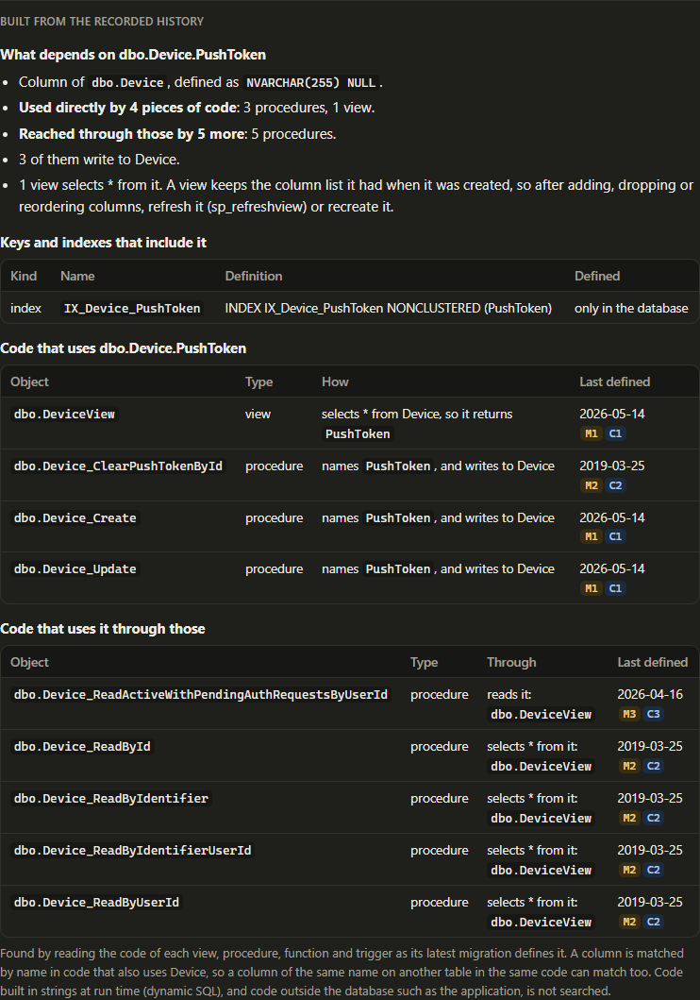
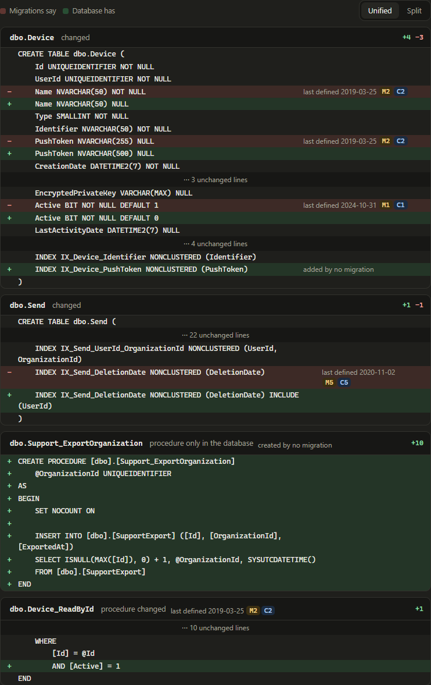

Every table and column, with the reason it exists.
Ask your database's history, and try your scripts for real before they ship. Answers cite the migration, the commit and the pull request behind them.
SQL Server & PostgreSQL · desktop app · SSMS · AI tools · CI
Why does this table or column exist?
Who added it, and in which pull request?
What breaks if I change it?
Does production still match the migrations?
Which scripts reached which database, and when?
Will this migration actually run, and what will it break?
Every team on SQL Server or PostgreSQL with Flyway, DbUp or a home-grown runner meets these.
bitwarden/server, a widely used open-source codebase
One answer means digging through all four by hand.
Code gathers the evidence; the model writes the answer and may cite only those sources.
Every claim links to its source. Where no reason was recorded, it says so.
Your databases are only read. Scripts run only in Crux's own sandbox.
A desktop app. Your code and connections stay with you.
Chat, reports and a side panel. Installs per user, updates itself.
Quick look, history on hover, the status bar, why a query failed.
An MCP server for Claude Code, Claude Desktop, VS Code, Cursor.
crux check reviews a pull request's migrations. No model needed.
SQL Server and PostgreSQL. Flyway, DbUp, Prisma, golang-migrate and home-grown runners.
Plain questions; every claim cites a migration, commit or PR
What depends on a table or column before you change it
Live database vs. migrations: finds hand changes, read-only
Flags risky migrations before merge, in the app or in CI
Size, reads and writes, Query Store, and the quietest hours
Drafts missing descriptions as a migration you review
Also /explain, /compare, /deployed, /sandbox, /changes, /who and more. Any branch read straight from git.


Type, history, pull request, size, what uses it. No model, under a second.
Rest on a name in a query: when it came, and why.
Renamed, dropped, or never there: from the history.
Crux's checks, then a real run in the sandbox.
Renamed to ValidUntil in 2022-03-01_00_AddApiKeysTable.sql, pull request #1991.
Builds a database from your migrationson LocalDB or a dev server
Runs each script you check, then rolls backSSMS, the chat, attached files, /pr
Reports what SQL Server diderrors, broken code, schema before and after
to build all 560 Bitwarden migrations
objects a column rename breaks: read vs. run
per script checked, rolled back
The model writes SQLa query, a fix, a migration
Crux checks itnames against your migrations, a real run in the sandbox, code it would break
Problems go back to the modelwith the real columns, up to two rounds
You see the version that worksmarked as corrected
Device has no column Token: sent back with its real columns
Hard problems, an unknown name or a SQL Server error, get two rounds; a warning from Crux's checks gets one.
For each step: what it touches, the risk, and how to back out.
One per step, run together in order in the sandbox, named the way your repository names them.
Take the real row countsfrom a connected database: counts, never rows
Give them to the sandbox's tablesinside the run that is rolled back
Ask SQL Server for its planthe estimated plan, freshly compiled
Show it when it mattersa big scan, many rows read, a new index
After adding an index:
Without the counts, SQL Server would plan for empty tables.
Shown only when it matters: a scan of 100,000+ rows, 10,000+ rows read, or a new index used. No data is copied.
Each one exposed a gap. Each gap is fixed and now has an eval suite.
planted hand changes found by /drift, and nothing else
Bitwarden migrations built from scratch in the sandbox
automated tests, 20 on a real SQL Server, plus eval suites
| Model | $ per M tokens in / out | Per question | Per developer per month | 10 developers per month |
|---|---|---|---|---|
| Haiku 5.5 | $0.10 / $0.50 | $0.001–0.003 | $0.42–1.05 | $4–11 |
| Sonnet 5.5 | $2 / $10 | $0.02–0.05 | $8–21 | $84–210 |
| Opus 5.5 | $4 / $20 | $0.04–0.10 | $17–42 | $168–420 |
| Fable 5.2 | $8 / $40 | $0.08–0.20 | $34–84 | $336–840 |
Assumes 5k–20k input and ~1k output tokens per question, 20 a day, 21 working days. List prices, Nov 2026.
in the app, SSMS or an AI tool
timeline, impact, usage, search
each gets an id: M12, C4, P3
citing only those ids, or saying none was recorded
names, a sandbox run, code it breaks
linked to migrations, commits and PRs
~27,500 lines of C# on .NET 10, 8,800 lines of tests, one 6,600-line web page
| T-SQL and PostgreSQL parsing | SqlChangeExtractor, Postgres* |
| Schema replay; git and GitHub | SchemaHistory, GitRepo, GitHubClient |
| Live databases: drift, usage | LiveDatabase, Drift, ProductionSignals |
| Sandbox: build, guard, run, plan | Sandbox* |
| Agent, checked fixes, Plan mode | Agent*, AgentPlan, ToolBox |
| Reports and the PR check | Recipes*, ChangeCheck |
| Desktop app and updates | Crux.Desktop, Updates |
| SSMS extension, MCP server | Crux.Ssms, Mcp |
| Chats and saved connections | AppStore (SQLite), Secrets |